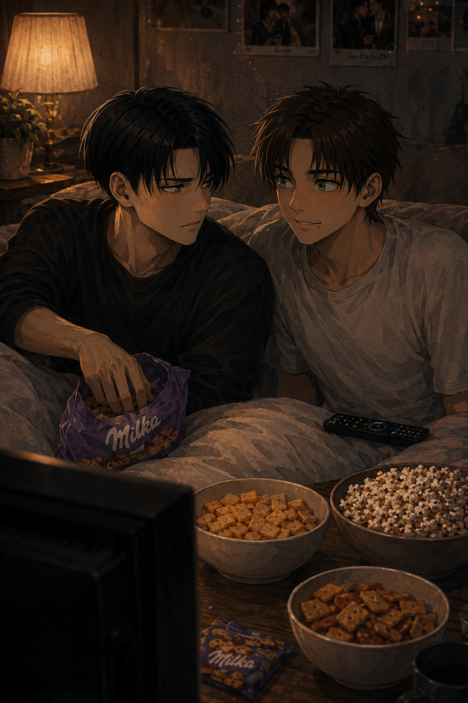

Love is Blind
Levi — POV

Levi had a system for nights like this.
Lights low.
Blanket ready.
Snacks placed within reach like it was a negotiation.
The only flaw in the system was the show.
“You know I hate this,” Levi said, already resigned.
Eren didn’t even look away from the screen. He was curled up against Levi’s side like he belonged there, warm and soft and completely unapologetic.
“You don’t hate it,” Eren replied, smug. “You hate that you like it.”
Levi made a sound in the back of his throat. Something between a scoff and a warning.
“It’s not real,” Levi said. “It’s a circus. It’s fake love, fake tears, fake drama.”
“It’s entertainment,” Eren answered simply. “And I love it.”
That part, Levi understood.
Eren loved stories. He loved watching people fall apart and put themselves back together. He loved the absurdity of it all — the exaggerated emotions, the ridiculous decisions, the way grown adults could look into a camera and say something insane with their full chest.
Levi didn’t love any of that.
But Levi loved Eren.
Which meant, somehow, he was here.
Eren pressed play like it was a sacred ritual.
The opening music started. The couples appeared. The confessionals. The dramatic pauses.
“No,” Levi muttered immediately.
“Shh,” Eren whispered, delighted. “This is the good part.”
Levi shifted under the blanket, trying to find a position that didn’t make him feel like he was actively participating in whatever disaster was about to unfold.
Eren, of course, took that as an invitation. He slid closer, draped himself over Levi’s chest, and tucked his face into the space under Levi’s jaw. Warm breath, warm hair, warm weight.
Levi’s hand found the back of Eren’s head without thinking. Fingers sinking into his hair, slow and familiar.
Levi hated the show.
But Levi loved this.
Ten minutes in, someone on screen said something unforgivable.
“Oh, come on,” Levi snapped.
Eren’s shoulders shook with silent laughter.
“You’re already mad,” he teased.
“Because they’re stupid,” Levi replied, gesturing at the screen. “They’re fighting in front of cameras about things that should be private. Why would you do that to yourself? This guy is the worst.”
“Because they’re messy,” Eren said, eyes bright. “And it’s fun.”
Levi watched the scene unfold with the expression of a man witnessing a crime.
Then, five minutes later, he leaned forward slightly.
“Wait. No. Don’t tell me he’s actually serious right now.”
Eren glanced up at him, victorious.
“You care, you're so invested” he whispered.
“I don’t care,” Levi lied.
Eren kissed his chin. Soft. Quick. A reward.
“You’re so cute when you’re in denial.”
Levi tried to glare at him. It didn’t land.
Somewhere between the second argument and the third dramatic walk-out, Levi stopped pretending he wasn’t invested.
He started commenting under his breath. Predicting the next disaster. Getting offended on behalf of strangers. Making that disbelieving sound he always made when something annoyed him.
Eren listened like it was part of the show. Like Levi’s reactions were his subplot.
Sometimes Eren would lift his hand and run his fingers through Levi’s hair, slow strokes that softened the tension in Levi’s shoulders even while he kept complaining.
Sometimes Levi would draw absent circles on Eren’s skin through the fabric of his shirt, a quiet habit he didn’t even notice he had until Eren sighed like it made him feel safe.
It wasn’t just a show.
It was a night built on small things that meant everything.
Halfway through the episode, Levi reached for the snacks.
The bag crinkled. The bowls shifted. The blanket slipped a little.
Levi’s fingers found the empty space where the Milka cakes were supposed to be.
He paused.
Looked again.
Like the cakes might have simply moved when he wasn’t watching.
Nothing.
“Eren.”
Eren hummed innocently, eyes still on the screen.
“Where are the vacas.”
Eren blinked once. Slowly. Like he didn’t understand the question.
“What vacas?” he asked, far too calmly.
Levi turned his head. Looked down at him. Looked at the corner of Eren’s mouth.
There was a crumb.
Levi stared at it for a long second.
“You ate them all,” Levi said flatly.
Eren’s expression didn’t even change. He simply shrugged like it was the most reasonable thing in the world.
“Babe, there were only five tiny vacas in the package,” he defended. “That’s not even a real amount.”
Levi’s mouth twitched. He tried to stop it.
He failed.
The laugh slipped out of him, warm and surprised, like it had been waiting all day for an excuse.
Eren looked up at him like he’d won something.
“There it is,” Eren whispered. “That laugh.”
Levi shook his head, still smiling. Still looking at him like he was ridiculous.
“You’re unbelievable,” Levi muttered. “I’ll buy more.”
“Good,” Eren said immediately. “Because I’m not sorry.”
“Well, if this is the only way for me to get a piece then,”
Levi leaned down and kissed him anyway.
Just once at first, under the pretext of that lame excuse that would grant him access to his lover's lips.
Then again, slower. A little longer.
Eren’s hand slid up to Levi’s cheek, thumb brushing gently like he was memorizing him.
Levi hated the show. Kind of.
But he loved the nights it created.
The episode kept going. The drama escalated. Someone cried. Someone stormed off. Someone made a speech that should’ve been private.
“Oh my god,” Levi groaned. “This is painful.”
“Dear God, you’re obsessed,” Eren whispered, laughing, kissing the corner of his mouth.
Levi didn’t deny it this time.
He only pulled the blanket tighter around them both, pressed his mouth to Eren’s hair, and let himself stay.
Levi stayed warm because Eren was here.
And somehow, that was all that mattered.
Later that week.
Levi stood in the aisle of a store, expression blank, hands in his pockets.
In front of him: face masks. Too many kinds. Too many promises. Too many pastel packages insisting they could fix someone’s entire life in fifteen minutes.
He grabbed a few anyway.
Hydrating. Soothing. Something Eren had pointed at once and said, We should do this next time.
Levi didn’t do skincare.
Levi did Eren.
He paid, left, and walked home with the small bag swinging at his side.
Already expecting the next night on the couch. The next ridiculous episode. The next stolen vacas.
And, somehow,
Levi couldn’t wait.